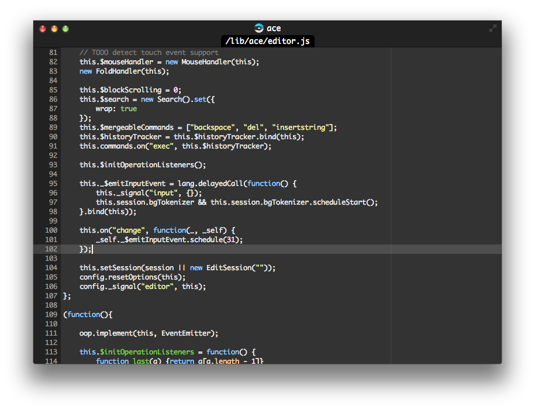
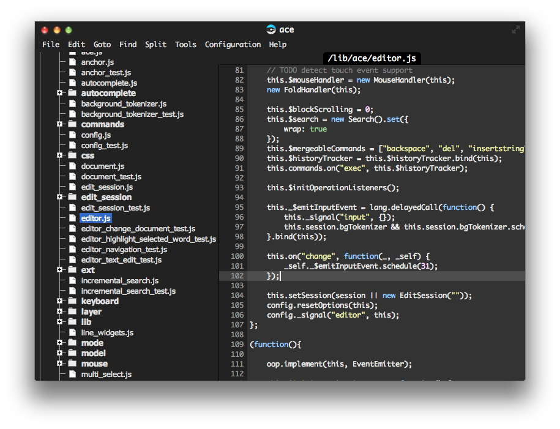

Pick an editor layout:

ChromelessIf you're a minimalist and want to work in an environment as clutter-free as possible, this is the option for you. There is no menu bar visible, nor a file tree constantly taking up space. If you like this mode, but want the menu bar as well: |

TraditionalIf you're used to editors like Sublime and Textmate with a file tree on the left and menu bar along the top -- you'll feel right at home with this "traditional" configuration. |
In addition, in order to know what Zed features to improve, we would like to collect anonymous information on what features of Zed you use. Since Zed is a 100% open source project, the findings of this research will be shared on the Zed website.
If, for whatever reason, you feel uncomfortable with this, you can disable this feature below. But we hope you don't, as this data really helps us. You can change this setting at any time in the Configuration project, the preference name is enableAnalytics.